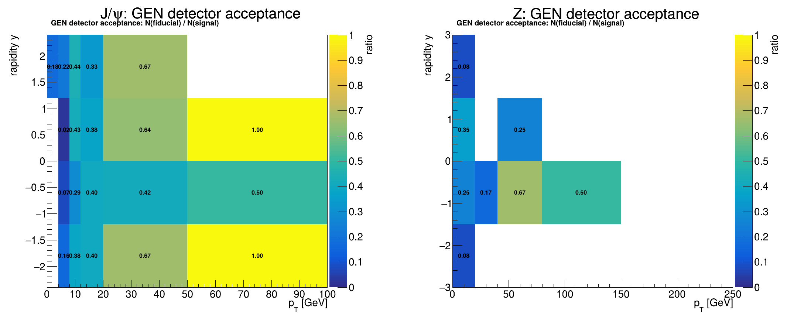
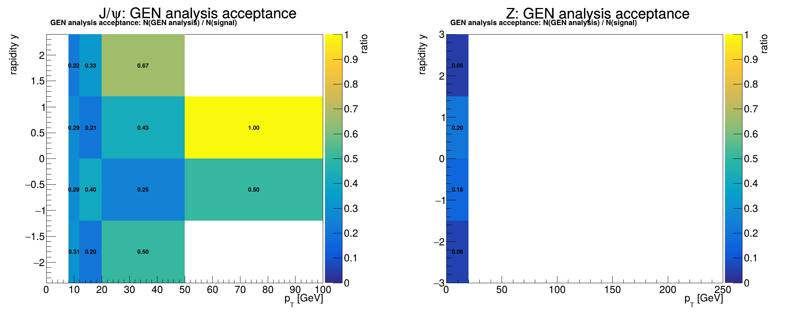
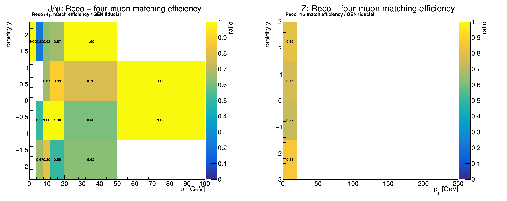
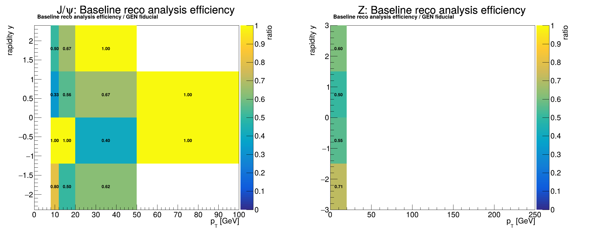

Run 3 2024 · DPS · full simulation chain
1M-attempt full-chain results
Private DPS J/ψ+Z→4μ sample propagated through GEN-SIM, DIGI/HLT, RECO and MiniAOD. Reconstruction is read from MiniAOD; decay truth is read from the corresponding RECO/AODSIM secondary files.
Integrated results
| Quantity | Numerator / denominator | Result | Binomial stat. |
|---|---|---|---|
| GEN detector acceptance | 87 / 435 | 20.00% | ± 1.92% |
| GEN analysis acceptance | 49 / 435 | 11.26% | ± 1.52% |
| Reco + four-muon match efficiency | 61 / 87 | 70.11% | ± 4.91% |
| Baseline reco analysis efficiency | 44 / 87 | 50.57% | ± 5.36% |
| Acceptance × baseline efficiency | 44 / 435 | 10.11% | ± 1.45% |
Definitions
Acceptance: A = N(GEN selection) / N(valid GEN J/ψ+Z→4μ).
Efficiency: ε = N(GEN-matched reconstructed selection) / N(GEN detector-fiducial signal).
Reco–GEN matching requires four unique, charge-compatible muons with ΔR < 0.1. The baseline analysis numerator requires the matched reconstructed candidate and the current analysis cuts. Each map is binned using the generated J/ψ or Z (pT, y) coordinates. Printed bin values are the bin-by-bin ratios; blank regions have no denominator events.
Acceptance maps
{kind=link}

{kind=link}

Efficiency maps
{kind=link}

{kind=link}

Reproducibility
CRAB: 100/100 jobs finished, task 260817_090141:gjinjing_crab_DPS_JpsiZTo4Mu_Analyzer_1M_v1_20260817.
THU result directory: /home/storage2/users/gjinjing/JpsiZ_Run2Run3_MC/results/fullchain_1M